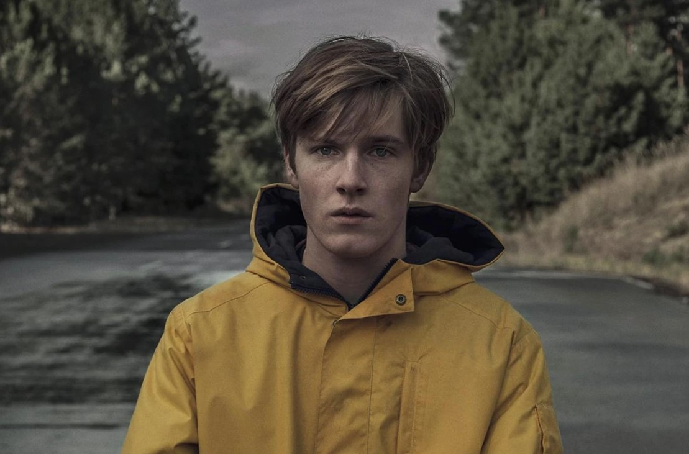
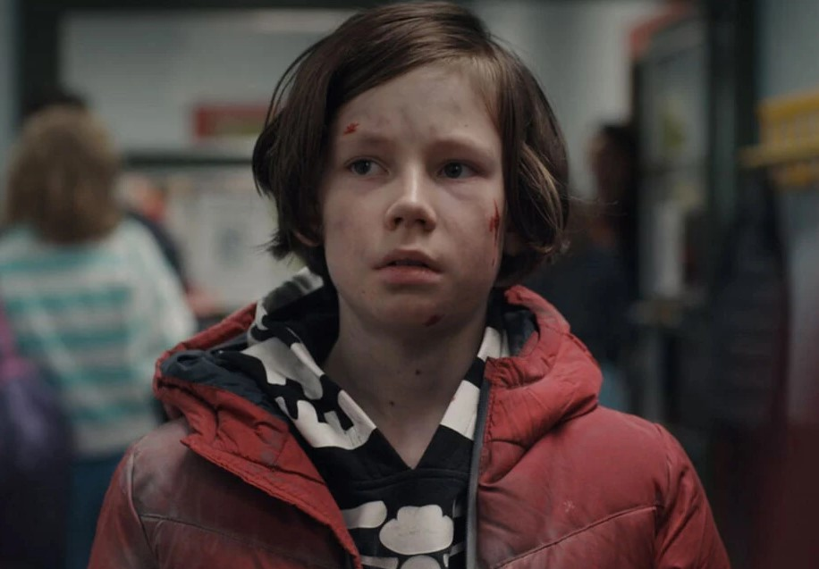
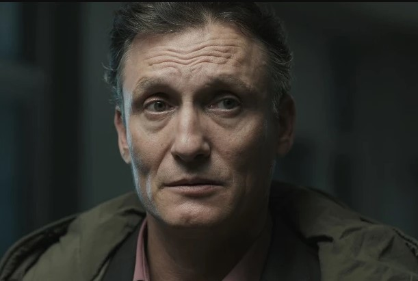

Jonas Kahnwald
Michael Kahnwald
Ulrich Nielsen



The central protagonist who evolves throughout the series. He appears as a teenager, an adult known as "The Stranger," and an older version called "Adam" with a scarred face.
Mikkel Nielsen, he time-travels to 1986 and is adopted by Ines Kahnwald, becoming Jonas's father.
A key figure in the story, he is both a father and a time traveler, whose actions have profound consequences on his family.